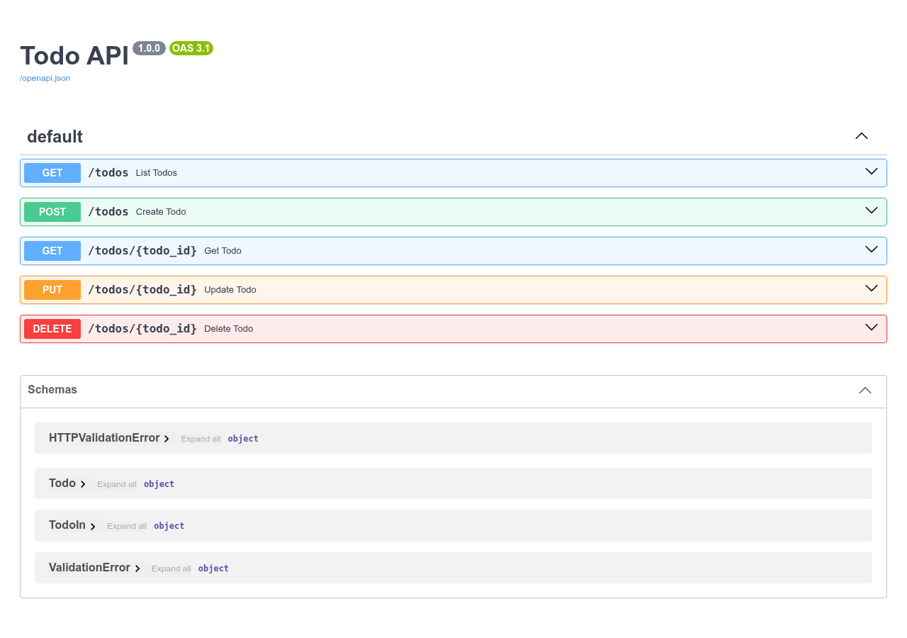

A small FastAPI service providing CRUD endpoints for todos. Data is kept in memory (swap in a real database for production).
This page is documentation only. The API itself is not hosted here; run it locally with the steps below. Source code: github.com/ofof/code.
GET /todos – list todos, optional ?done=true|false filterPOST /todos – create a todoGET /todos/{id}, PUT /todos/{id}, DELETE /todos/{id}/docspip install -r requirements.txt
uvicorn main:app --reloadThen open http://127.0.0.1:8000/docs.
pip install pytest httpx
pytest